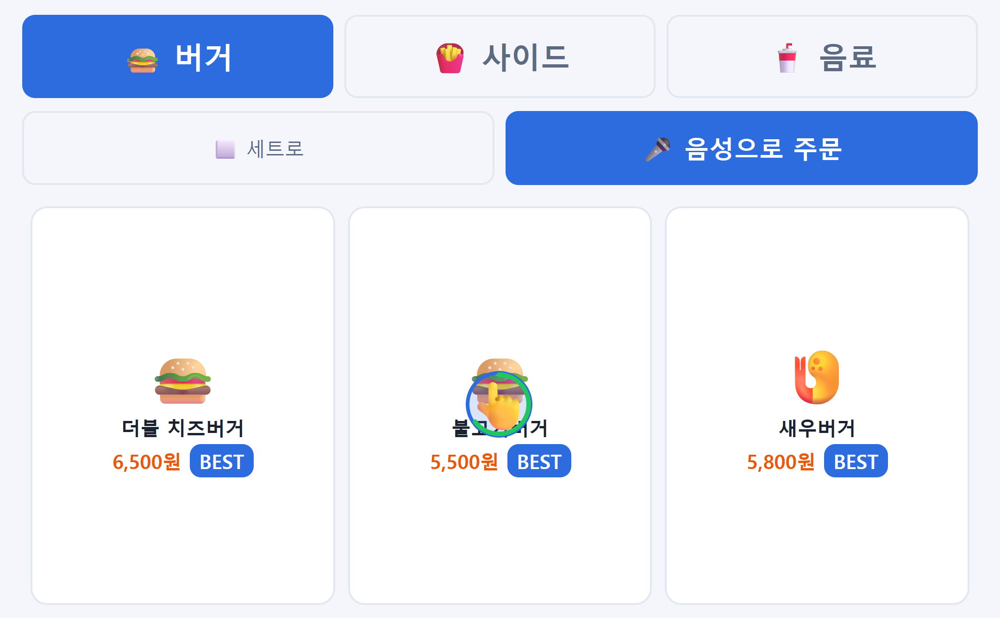
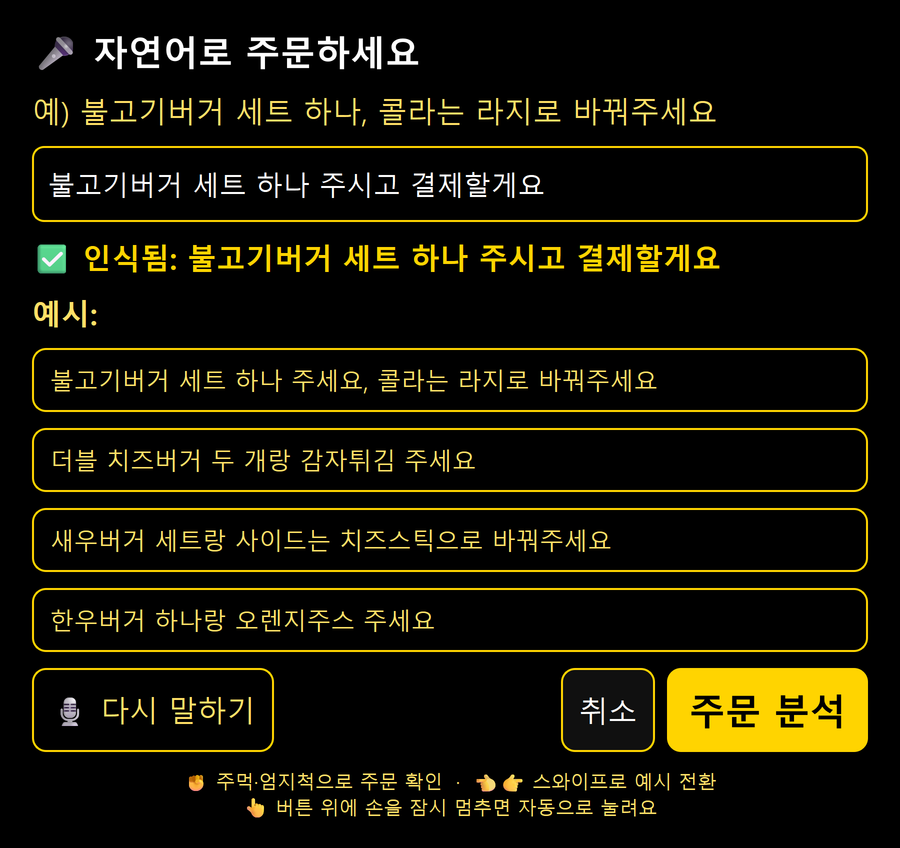
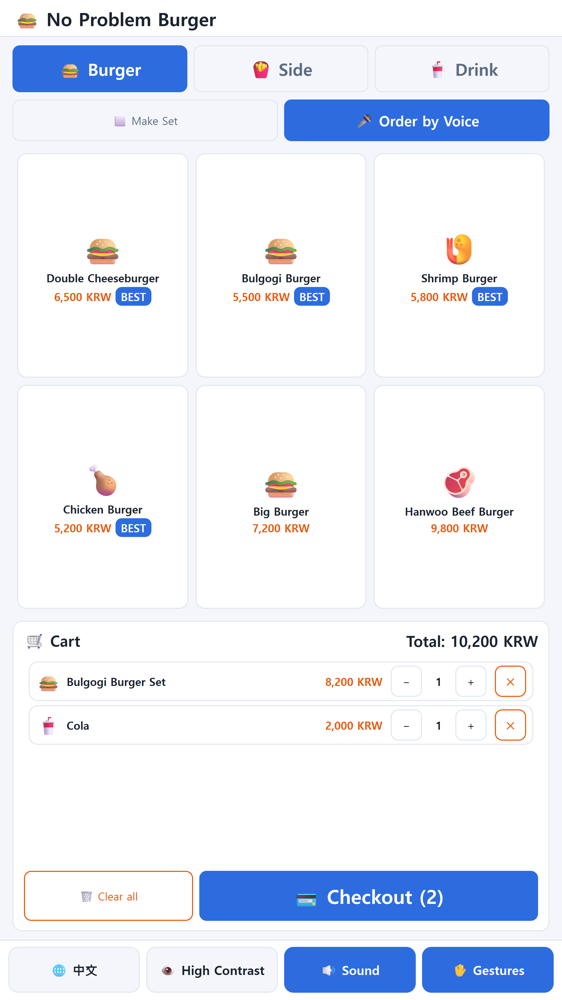
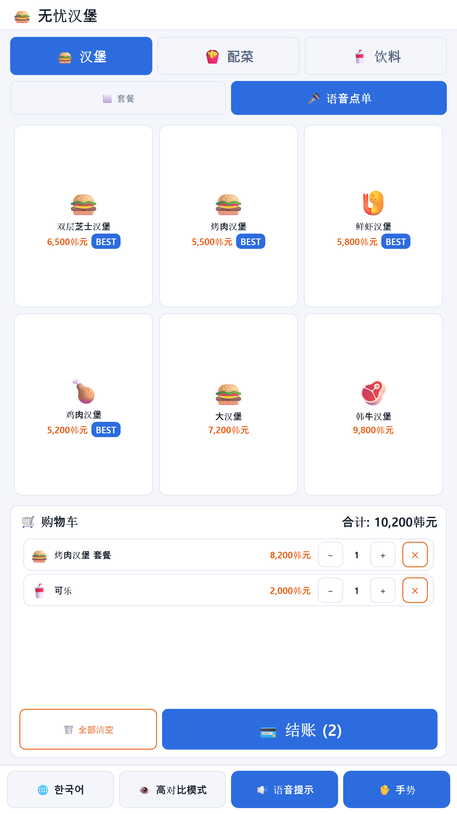

🤖 배리어프리 AI 키오스크
유니버셜
키오스크
UNIVERSAL KIOSK
기계가 사람에게 먼저 맞춥니다.
카메라와 AI가 손님의 나이와 불편함을 알아채고, 화면·손동작·목소리로 누구나 도움 없이 혼자서 끝까지 주문하도록 돕는 햄버거 매장 키오스크입니다.
👵 나이 맞춤 화면
✋ 손동작 주문
🔊 음성 안내
🌐 한·영·중
👁 고대비

첫 화면

어르신 → 실버 모드
📺 27인치 세로 터치스크린 · 1080 × 1920
01왜 만들었나요? 키오스크 앞에서 멈춰 선 사람들
👧
어린이
키가 작아 위쪽 버튼이 잘 안 닿고, 작은 글씨와 여러 단계가 어려워요.
어린이 모드 + 아래쪽 큰 버튼
👵
어르신
글씨가 작고 단계가 복잡해 헤매다가, 뒤에 줄이 길어지면 포기해요.
실버(큰 화면) 모드
🦯
눈이 불편한 분
화면이 보이지 않거나 흐릿하게 보여서 혼자 주문하기 어려워요.
음성 안내 + 고대비
🌏
외국인
한국어 메뉴를 읽지 못해 사진만 보고 고르거나 그냥 나가요.
한·영·중 다국어
🖐️
손이 불편한 분
화면을 정확히 누르기 어렵고, 많은 사람이 만진 화면도 걱정돼요.
비접촉 제스처
💡 도움이 가장 필요한 사람일수록 '글자 크게' 같은 버튼을 스스로 찾기가 어렵습니다.
그래서 사람이 기계에 맞추는 대신, 키오스크가 먼저 알아보고 맞춰 주도록 만들었습니다.
025대 핵심 기능 가장 안정적으로 동작하는 기능만 골라 끝까지 다듬었습니다
1
나이 인식 자동 화면 전환
학습된 AI(CNN)가 카메라 속 얼굴을 보고 어린이·성인·노인을 구분해, 버튼을 누르지 않아도 화면이 알맞게 변신합니다.
- 최근 20번 중 13번 이상 같을 때만 전환
- 바뀐 뒤 4초는 유지 → 깜빡임 없음
- 어린이 글자 1.3배 · 실버 1.5배 + 인기 메뉴 먼저, 메뉴 카드는 크게 2열
- 나이는 화면 결정에만 쓰고 저장 안 함


2
비접촉 제스처
손이 불편한 분 · 위생
화면을 만지지 않고 손짓만으로 주문합니다. 가리키기와 고르기를 나눠 손이 흔들려도 엉뚱하게 눌리지 않아요.
✋손바닥 = 커서
🤏집기 = 선택
⏱️2초 멈추면 선택
👈👉휘둘러 넘기기
3
음성 기능
시각장애인 · 저시력자
🔊 "눈이 불편하시거나 화면이 잘 안 보이시나요?"
🙋 "네!"
👁 화면이 고대비로 바뀌고 🎤 마이크가 저절로 켜져요
🙋 "불고기버거 세트 하나 주시고 결제할게요"
🔊 "불고기버거 세트 1개 담았어요. 지금 합계는 8,200원입니다."
4
다국어 (한·영·중)
외국인

🌐 맨 아래 언어 버튼 한 번으로 한국어 → English → 中文. 영어·중국어로 말하면 화면도 자동으로 그 언어로 바뀌고,
어순이 다른 수량도 정확히 읽어요: "버거 두 개" · "two burgers" · "两个汉堡"
5
고대비 화면
저시력자
화면 맨 아래 👁 고대비 모드 버튼 한 번이면 검정 배경 + 노랑·흰 글씨, 글자 1.35배.
- 음성 도움 안내에 "네"라고 해도 자동으로 켜짐
- 손님이 고른 화면은 나이 인식이 덮어쓰지 않음
- 끄면 바로 전 화면으로 돌아감
흰 글씨 21 : 1
노랑 강조 14.7 : 1
글자와 배경의 밝기 대비 — 웹 접근성 국제 기준(WCAG) 최고 등급 7 : 1을 넉넉히 넘습니다.